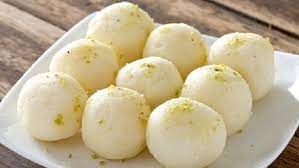
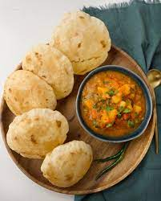
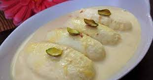
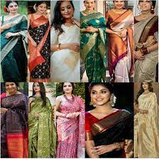
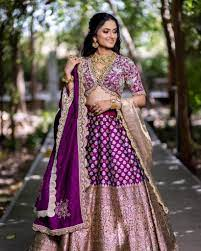
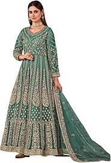
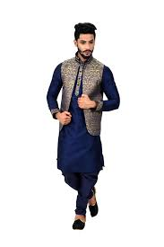

India Major Ethnic Groups
Indo-Aryans
The Indo-Aryan people are part of the various Indo-European ethnolinguistic groups who speak one of the many Indo-Aryan languages. It is estimated that the Indo-Aryans first migrated to the Indian Subcontinent of South Asia around 1800 BCE. Indo-Aryans make up the majority of the Indian population and are mostly located in north and central India...
Dravidians
The Dravidian people are any native speakers of the Dravidian languages in the Indian Subcontinent of South Asia. Almost all the Dravidians of India live in the south of India. The five major ethnic groups of Dravidian people in India are Kannadiga, Malayali, Tulu, Tamil, and Telugu...
Mongoloid And Other Minority Groups
The Brachycephalic peoples were the first to arrive in India, having traveled all the way from Africa. In modern mainland India, only small groups of the Brachycephalic peoples, like the Irulas, Kodars, Paniyans, and Kurumbas, live in small areas in southern India in hill tribes...
India Foods
Rasgulla
Rasgulla is a traditional sweet that is usually served at the end of a meal, like many other Indian milk-based desserts. It is prepared from chhena paneer dumplings and semolina dough, cooked together in a sugary syrup. The origin of rasgulla is the subject of a heated debate...


Puri
Puri is an unleavened, fried Indian bread made with water, finer or coarser wheat flour, and occasionally cumin seeds. The dough is rolled into flat round shapes and fried in copious amounts of vegetable oil or ghee...


Pulihora
Pulihora is a popular south Indian dish that can easily be found in the states of Andhra Pradesh, Tamil Nadu, and Karnataka. It consists of rice, turmeric, tamarind, curry leaves, coriander, ginger, and green chiles...


Malai
The thick, mild malai is a homemade dairy product made with heated milk which is refrigerated until a thick layer of fat is created on top. Yellow in color, malai is usually skimmed off by hands...


Pav bhaji
Pav bhaji is a popular street snack originating from the Indian state of Maharashtra. It consists of a vegetable curry that is typically served with a soft bread roll known as pav...


India Dressings
Saree/Sari
The Saree/Sari is the most traditional Indian dress and is thought to have originated as early as 2800 BC in the Indus Valley...


Lehenga/Lengha
The lehenga/Lengha is the original crop top and skirt set. It is also made up of 3 parts: A cropped top known as a Choli, a skirt known as the Lehenga, and a long scarf known as the Dupatta...


Anarkali
Legend has it that the Anarkali was named after a courtesan of Great Emperor Akbar’s court from the Mughal Era. Think of the type of flowy midi dresses you wear in the summer when thinking of an Anarkali...


Sharara Suit
Think 70s disco pants when thinking of a Sharara. It is a 3-piece outfit that can be identified by its unique wide leg flowy pants...


Kurtas
A Kurta is a collarless shirt made of rectangular pieces that are stitched together with seams along the side of the shirt...



India Greetings
1. Khuda Hafiz: This greeting is usually followed by the Islamic religion of India. They use Khuda Hafiz or Allah Hafiz at the time of saying goodbye...
2. Vanakkam: Welcoming someone in South India is done by greeting Vanakkam. This kind of greeting is usually practiced and said by Tamilians, Malayalam, and Lakhans...
3. Pranam: Mainly there exist 6 types of pranam which are ashtanga, sashtanga, panchanga, dandavats, namaskar, and Abhinanda...
4. As-salam alaiKum: As-salam alaikum is also one of the famous greetings of the Muslim religion...
5. Jai Shree Krishna: Jai Shree Krishna is generally used by all the individuals of India, but especially when you visit Gujarat or meet the Gujarati family...
6. Khamma Ghani: This greeting is a very popular greeting to be heard in Rajasthan...
7. Namaskar/Namaste: Namaste is one of the most commonly used greetings in India, which is usually used for greeting people and saying bye...